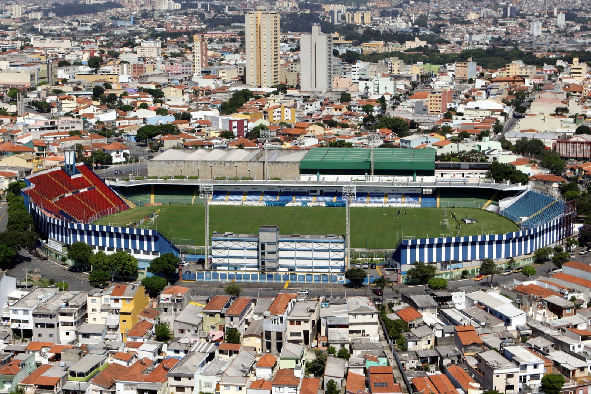
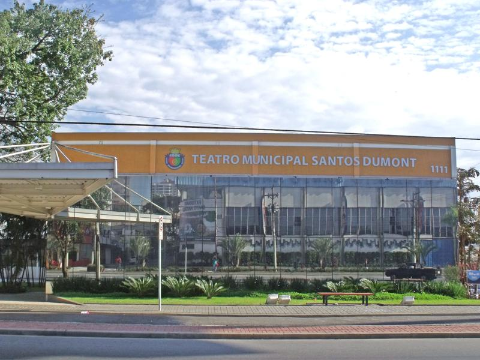
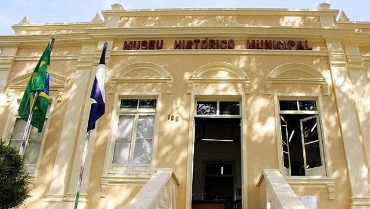

Parque Chico Mendes – Área de lazer com trilhas, lago, playground e espaço para piqueniques, sendo um dos principais refúgios verdes da cidade.
📍 Endereço: Av. Fernando Simonsen, 566 – Cerâmica, São Caetano do Sul – SP.

São Caetano do Sul, localizada no ABC Paulista, é referência nacional em qualidade de vida e desenvolvimento humano. A cidade combina planejamento urbano eficiente, infraestrutura moderna e serviços públicos de excelência, especialmente em saúde e educação. Com tradição industrial e forte presença cultural e esportiva, também se destaca pela inovação e sustentabilidade, tornando-se um modelo de cidade inteligente no Brasil.
Parque Chico Mendes – Área de lazer com trilhas, lago, playground e espaço para piqueniques, sendo um dos principais refúgios verdes da cidade.
📍 Endereço: Av. Fernando Simonsen, 566 – Cerâmica, São Caetano do Sul – SP.
Espaço Verde Chico Mendes (Planetário de São Caetano) – Além da natureza, abriga o Planetário e a Fundação das Artes, atraindo visitantes para atividades culturais e científicas.
📍 Endereço: Av. Fernando Simonsen, 566 – Cerâmica, São Caetano do Sul – SP.

Estádio Anacleto Campanella – Tradicional palco do futebol no ABC, casa do São Caetano Futebol Clube.
📍 Endereço: R. Walter Thomé, 64 – Olímpico, São Caetano do Sul – SP.
Teatro Santos Dumont – Um dos principais espaços culturais da cidade, recebe peças, shows e eventos artísticos de diversas áreas.
📍 Endereço: Av. Goiás, 1.111 – Santa Paula, São Caetano do Sul – SP.
Museu Histórico Municipal de São Caetano do Sul – Conta a trajetória da cidade, desde suas origens até o presente, com acervo histórico e exposições permanentes.
📍 Endereço: R. Maximiliano Lorenzini, 122 – Fundação, São Caetano do Sul – SP.
